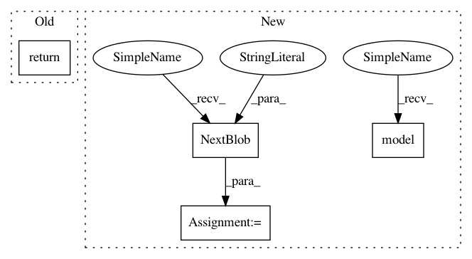

2c7a2997c28d0be732e4157e924dce87bcf56236,ml/rl/training/discrete_action_trainer.py,DiscreteActionTrainer,get_q_values_all_actions,#DiscreteActionTrainer#Any#Any#,192
Before Change
trainer"s TargetNetwork to compute Q values.
if use_target_network:
return self.target_network.target_values(states)
else:
all_q_values = C2.NextBlob("all_q_values")
MakeForwardPassOps(
C2.model(),
After Change
all_q_values = C2.NextBlob("all_q_values")
if use_target_network:
if self.conv_target_network is not None:
conv_output_blob = C2.NextBlob("conv_output")
self.conv_target_network.make_conv_pass_ops(
C2.model(),
states,
conv_output_blob,
)
states = conv_output_blob
self.target_network.make_forward_pass_ops(
C2.model(),
states,
all_q_values,
True,
)
else:
if self.conv_ml_trainer is not None:
conv_output_blob = C2.NextBlob("conv_output")
self.conv_ml_trainer.make_conv_pass_ops(
C2.model(),
states,
conv_output_blob,
)
In pattern: SUPERPATTERN
Frequency: 3
Non-data size: 4
Instances
Project Name: facebookresearch/Horizon
Commit Name: 2c7a2997c28d0be732e4157e924dce87bcf56236
Time: 2018-04-16
Author: jjg@fb.com
File Name: ml/rl/training/discrete_action_trainer.py
Class Name: DiscreteActionTrainer
Method Name: get_q_values_all_actions
Project Name: facebookresearch/Horizon
Commit Name: 2c7a2997c28d0be732e4157e924dce87bcf56236
Time: 2018-04-16
Author: jjg@fb.com
File Name: ml/rl/training/discrete_action_trainer.py
Class Name: DiscreteActionTrainer
Method Name: get_q_values_all_actions
Project Name: facebookresearch/Horizon
Commit Name: e91a9941d0ee6d1198e4b05bbd39ce16b5c0d569
Time: 2018-02-27
Author: jjg@fb.com
File Name: ml/rl/training/discrete_action_trainer.py
Class Name: DiscreteActionTrainer
Method Name: get_q_values_all_actions
Project Name: facebookresearch/Horizon
Commit Name: e91a9941d0ee6d1198e4b05bbd39ce16b5c0d569
Time: 2018-02-27
Author: jjg@fb.com
File Name: ml/rl/training/target_network.py
Class Name: TargetNetwork
Method Name: target_values